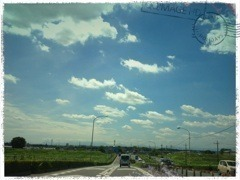

| 2012/08 16 Thu | 祝＊100回更新(´>∀<｀)ゝ |
遅ればせながら(´・ω・｀)♡
今回が、100回目のブログ更新です
 やたやた
やたやた
やたやた
100回目ということで、
題名の顔文字もリニューアルしちゃいます


♪♪(o・ω・)ノ))→(´>∀<｀)ゝ
こっちのほうがちはるっぽいかも。
やっと100回目とゆことで、
ここまで更新をできたのは
皆さんが温かいコメントをくれるからだと思ってます。
本当に感謝です（ ; ; ）
まだ私のことをちゃんと知ってる人は少ないと思うので
コメント数もまだまだですが(..)
これからも頑張っていきます‼←
なのでよく知らない人に、
私のことを知ってもらえるように
ここをいちアピールの場だと思って
更新頑張ります‼

これからも付き合ってってください( ；∀；)


13日、14日に、やっとこさ
初‼単独ライブを行いましたヽ(^ω^)ﾉ
ちはるは13日のzepp大阪に出てきたよ‼

初ライブにきてくださった方
本当にありがとう♡♡
楽しんでくれたかな？
ちはるはすっごい楽しかった( ；∀；)
ライブは、学ぶことがいっぱいあったよヽ(^0^)ﾉ
いい経験ができてほんと良かった

いよいよ発表になった東京公演に向けて、
もっとダンスのスキルと、
表情のバリエーションと、
前へ前へのトーク力と、
そして体力と...
頑張っていきます◝(●˙꒳˙●)◜
13日は、
私にとって、
メンバーにとって、
家族にとって、
そして皆さん、ファンの方々にとって、
忘れられない大切な日になりましたよね⁇
いい思い出をありがとうヽ(^ω^)ﾉ
ちはるは、
涙がまだ悲しみだった頃
狼に口笛を
左胸の勇気
人はなぜ走るのか？
音が出ないギター
オーマイガー
会いたかった
Beginner
走れ！Bicycle
会いたかったかもしれない
乃木坂の詩
に出演しました( ˙³˙)

ギターはゆみこのアンダーとして♡
そして
NMB48さんのオーマイガー、
AKB48さんの会いたかった、Beginner
をサプライズで披露しました
練習してるときとかすっごく楽しくって♡(´>∀<｀)
こうやって踊れて嬉しかった
本当いい思い出♡
みなさんありがとうヽ(^ω^)ﾉ
今日はメンバー紹介はお休みします(´･-･`)
そして次回は、
北海道でPR活動をしてきたので
そのことを書きます
今日は久しぶりにおばあちゃんちに
行ってきます( ´ ▽ ` )ﾉ
あーきれいな空

絵はがき風(*´ω`*)

これからもよろしくね
ばいるんっ
るんるんっ
ちはるんっ
(´>∀<｀)ゝ
コメント(76)
2012/08/16 15:54